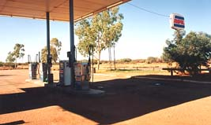

 その後２時間後に休憩を兼ねて給油することにした。オーストラリアはどこもセルフサービスである。車の給油口のキャップを あけた途端、ガソリンの気体が勢いよく飛び出して一瞬私の体を包み込んだ。ウワーと思った。ガソリンを入れ始めると、今度 は気体と一緒にガソリンが飛び出してきた。体に液体ガソリンが飛び散ったが直ぐに乾いた。思わず周りをみた、たばこの火な どはないか探した。幸い着火する火はなく無事である。もし着火源の火が近くにあったら私は丸焦げであり、車は爆発していた かもしれない。と思うとゾーとした。さて、ガソリンを入れ始める。入れた途端ガソリンが吹き出してきた。ガソリンタンクが熱くなっているので、ガソリンが気 化し吹き出るのである。気化したガソリンが外に出るのを塞ぐと直ぐに飛び出すので、塞がないようにに少しずつ入れる。時間 がかかった。入れた量の半分は気化して逃げたのではないかと思う位時間は掛かるし、ガスが出ていくのが良く分かった。支払 いでカウンターに行ったら、時間がかかったねと言われた。 夕方６時頃には半島の入り口に来た。距離は凡そ１０００ＫＭ位である。そこまで途中合計３時間位休んでいる。平均時速１ １０ｋｍ／ｈｒの計算になる。後は１時間くらいで着くつもりで半島に入る。やがて日が沈み暗くなる。道路も起伏が激しくな り先が見えない、登り着くともう着くと思うが更に先に丘があって前が見えない。 いい加減右足に力が入らない、気が付くと時速８０キロに落ちる。また頑張って１２０キロにあげる。ちょっとするとまた８０ ｋｍ／ｈｒに落ちている。これの繰り返しが続く。対向車は全くなく、街灯も当然ない寂しい真っ暗闇をひたすら走る。 ８時頃にようやくモンキーマイヤに到着。人気がなく、強風と波の音ばかりする。受付で鍵を貰って就寝。 所でポートヘドランドからここに着くまでの対向車の数は１１時間走行中２５０台位で、郊外では３０分に１台位であった。 日本だったら何台になったのだろうか、１万は越えるかな。 |